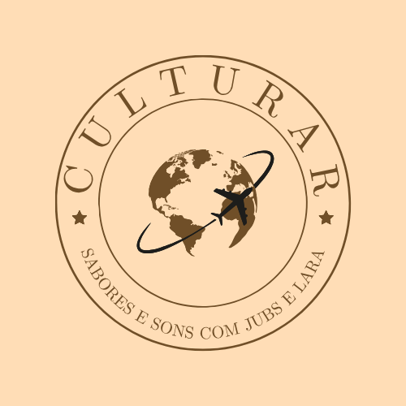
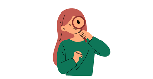

Viajando entre culturas, sabores e sons...
Seja bem-vindo! Prepare-se para sua viagem!
Conhecendo um pouquinho mais do nosso site 💕
Aqui você encontra...👀
- I. Histórias e origens de cada parte do mundo.
- II. Fatos interessantes.
- III. Gastronomia típica ou ingredientes tradicionais.
- IV. Eventos culturais e oficinas.
Escolha uma opção para continuar
